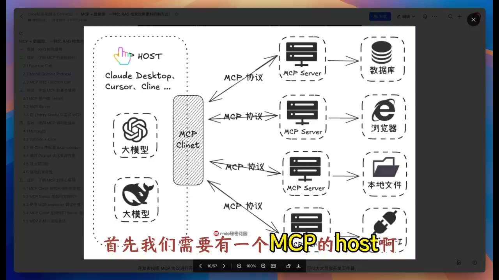

统计学生人数，为什么该把计算交给数据库？
原视频：MCP + 数据库，一种提高结构化数据检索精度的新方式 · code 秘密花园 · 约 25 分钟。工具界面和兼容情况属于录制时版本。
一句话抓住核心
需要精确筛选、计数和关联的数据问题，应考虑让数据库执行查询，再让模型解释结果。
从一个具体问题开始
“有多少身高超过 180、姓李的男同学？”
如果我只从学生资料里找出几段与问题相似的文本，再让模型数人，检索阶段可能已经漏掉了符合条件的记录。模型就算把手里的几条资料数对，也无法得到完整答案。[00:19:58]
数据库查询可以把条件写明确，再在授权的数据范围内执行筛选和计数。这个案例的关键收益来自结构化数据及查询执行方式；MCP 帮助客户端把这些能力接到模型周围。
1. 分清三层职责
[00:03:30] 工具调用让模型能够提出访问外部系统的请求。运行程序需要解析请求、验证参数、执行操作，再把结果返回模型。模型生成一句“我已经查了”，并不能证明查询真的发生。
[00:06:15] MCP 提供模型应用与工具／数据服务之间的协议。原视频用统一插头作类比：服务实现可以被兼容的客户端复用，减少每个应用重复接入的工作。

这三层可以这样记：
| 层 | 负责什么 | 常见失败 |
|---|---|---|
| 模型与上下文 | 理解问题，决定调用哪个工具和哪些参数 | 条件理解错、猜字段 |
| 客户端与协议 | 发现能力、传递请求、处理返回 | 能力不兼容、错误处理缺失 |
| 数据库与执行权限 | 在授权范围内计算、筛选、关联 | 权限过大、结果过多、数据缺失 |
MCP 的存在不会自动保证上面每层正确，也不等于所有模型天然具备稳定的工具调用能力。[00:12:01] 演示里不同客户端就有不同的模型支持方式。
补充核对：官方文档明确把 MCP 范围限定为上下文交换协议；应用如何使用模型与上下文，仍由应用自身设计。MCP 架构说明
2. 看一条失败是怎样被定位的
[00:20:17] 当问题变成“哪些同学期末考试成绩比平时好”时，模型最初不知道分数对应的字段，也不知道成绩在哪张表。它先猜错，再查看数据库里的表和字段，最后构造查询。
这里已有一个清楚的失败原因：数据库虽然连上了，模型却没有获得足够的数据结构说明。直接换模型未必是最小修复。
[00:21:30] 优化做法是在上下文中说明表结构、字段和使用条件。再次提问时，模型能更直接地形成查询计划，减少来回探查。
[00:22:30] 另一个例子需要先定位学计算机的某位同学，再关联到教师信息。它展示了多步数据关系查询。涉及实际联系方式时，还必须有合法用途和访问权限；本课程不复制演示中的个人联系字段。
3. 比较方案时，要比较相同的任务
[00:23:00] 原视频把同样的数据导入一个普通知识库，比较计数、条件过滤和跨表关系问题。在这些示例里，数据库路线表现更好。
能够支持的结论是：这些结构化任务，值得采用能执行精确查询的工具。 这组演示没有证明所有 RAG 架构都无法计数或多轮查询，也没有完成所有产品之间的公平基准比较。
文本检索与数据库查询也可以出现在同一个系统里。比如先查库存，再检索某型号的使用限制，最后组织成一段回答。把任务路由到合适的信息源，比给技术贴胜负标签更有用。
4. 准确之外，还要管住成本与权限
[00:23:37] 查询结果过大可能增加上下文消耗，甚至拖垮客户端。返回数量、字段范围和查询时限都需要限制。
[00:18:00] 演示中的数据库服务有不同配置方式，包含只读选项。迁移到真实业务时，应优先从只读、最小权限和限定数据库开始。用户要求查信息，不自动包含修改或删除记录的授权。
原视频把某些客户端的 token 消耗归因于提示词和协议实现。这属于当时具体实现的观察，不能作为 MCP 必然昂贵的通用定律。
时间戳导航
- [00:01:01] 普通知识库的任务边界。
- [00:03:30] 工具调用的作用。
- [00:06:15] MCP 的协议角色。
- [00:12:01] 客户端兼容差异。
- [00:18:00] 数据库连接与只读配置。
- [00:19:58] 条件计数。
- [00:20:17] 不知道表结构导致的试错。
- [00:21:30] 用 schema 说明减少错误。
- [00:23:37] 结果量和上下文成本。
复习与行动清单
迁移练习：建立一个完全虚构的十行书单，包含作者、年份、页数。准备三题：统计、条件筛选、跨字段比较。先手工写出正确答案，再检查模型发出的查询和返回结果。
把“理解问题正确”“查询正确”“结果解释正确”分别打勾。这样才知道一次失败发生在哪层。